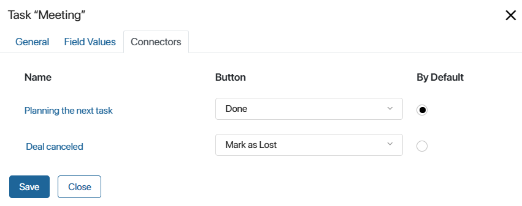

The activity is used to assign an employee the task to hold a meeting with a client as part of a business process. Each meeting is associated with an item of the CRM app, such as lead, deal, company, etc. On the item page, you can go to the task at any time to view information about rescheduled appointments and agreements made.
The apps for which you can assign the Meeting type task within a business process are selected in the CRM task type settings.
Place the activity on the process diagram and double-click on it to open its settings.
General tab
- Name*. Specify the activity name displayed on the process diagram.
- Task Name. Check the Generate name from template option to include context variables in the name shown in the executor’s task list and on the task page.
- Template*. On the right side of the field, click {+} and select a variable. You can also add a date to the template using the DateTime() function. To do that, click the f(x) icon.
- Notification. When this option is selected, the executor will see a notification about the task in the #Activity stream when it is assigned.
- Item*. Select a variable of the App type from the process context referring to the app for which a task of the Meeting type is available. You can either select a variable that already exists from the drop-down list or create a new one.
This option is used to associate the task with a specific app item, for example, with a certain deal. Task information such as postponed meetings and agreements reached is recorded on the app item’s page, so you can easily track communications with each client.
Please note that the value of the context variable must be defined in the business process before it reaches the Task “Meeting” activity. To assign a value to it, use the Assign Value activity.
- Executor*. Select the employee who will execute the task. You can use a context variable of the Users type.
- Start date. Specify the time when the executor will start the task:
- Exact time. Specify after how many minutes, hours, or days the executor must hold a meeting with the client. The time can be indicated taking into account the Business Calendar settings.
- Variable. Specify a Date/Time type variable from the context or create a new one. Adjust the time if necessary. For instance, add a day to the value to be stored in the variable.
This option is useful when the exact task start time is unknown. For example, if you need to arrange a meeting one day after the commercial proposal has been sent to the client.
- Complete by. Specify when the executor should complete the task. The field is filled in in the same way as the Start date. When the deadline expires, the task will be marked as overdue.
You can specify the period of task execution considering the business calendar, and with the Consider the duration of the work day as a constant option, you can consider the standard number of working hours per day. Read more about it in the Task article.
Field Values tab
When executing a task of the Meeting type, the user will see fields with information such as Contacts, Description, Priority, etc. These fields can be filled with data from the business process context. To do this, you need to enter the data into the process context before it reaches the Task “Meeting” activity, for example, using the Assign Value activity or within a task.
To configure the data transfer, map properties on the Field Values tab: select task fields in the left column and process variables in the right column.
You can change the set of fields for the Meeting type task in the CRM task form settings.
Connectors tab
To complete the task, the user clicks on one of the buttons on its page. Unlike a standard task, the buttons for a CRM task are set in the task type settings. By default, the Done and Edit buttons are available for the Meeting type. Depending on the button type, the task is simply completed or additional actions occur, such as assigning a new task, closing a deal or lead, etc.
On the Connectors tab you can map these buttons to the outgoing connectors of the Task “Meeting” activity so that if you click a button, the process continues along different paths. For example, if an employee selects the Done button, the task will be closed and the process will move on to the path for planning the next task. If the user clicks Mark as Lost, the deal will go to the Lost status and the process will go to the end event.

Please note that you must select a default connector for the activity. It is activated if the executor clicks a button on the task page that is not mapped to any connector.
After you have specified all the parameters, click Save. Then save and publish the process.
How to work with the Meeting task
When the process reaches the Task “Meeting” activity, the system assigns the executor the task to hold a meeting with the client. This task is displayed in the Tasks > My tasks workspace or in a separate CRM Tasks group if the user has configured CRM tasks to be displayed separately from other tasks in the user profile settings. Employees will also see the task on the page of the app item for which it is assigned, for example, a deal.
The executor will be able to close or edit the task, as well as leave a comment, which will be displayed in its associated activity stream. Read more about it in the CRM tasks article.
Found a typo? Select it and press Ctrl+Enter to send us feedback